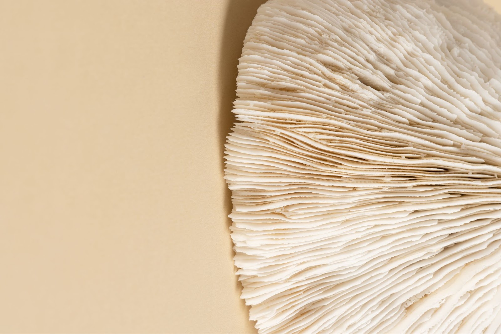
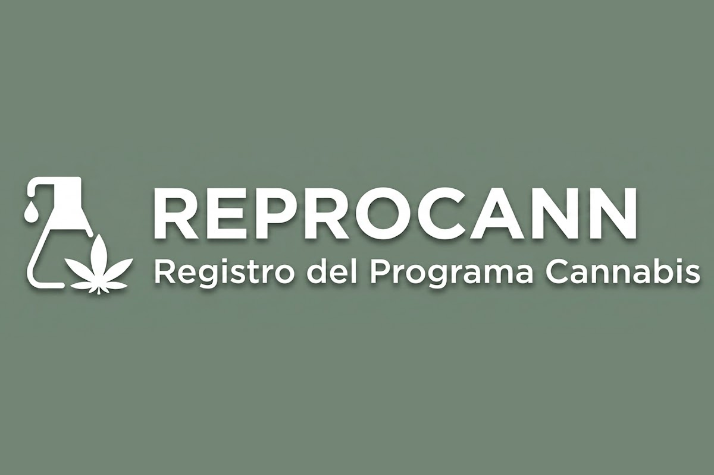

Terapias complementarias
Integramos enfoques convencionales con medicinas naturales y suplementación, siempre con criterio clínico.
Un enfoque integral que combina el rigor de la medicina con medicinas naturales —cannabis medicinal y hongos medicinales— y hábitos que se sostienen en el tiempo.
General Roca, Río Negro. Presencial, online o a domicilio.

Muchas personas asocian la medicina integrativa con la medicina alternativa, pero en realidad es un enfoque que integra la mejor evidencia científica con una mirada más amplia sobre la salud.
Además de buscar un diagnóstico y un tratamiento adecuados, nos preguntamos qué factores pueden estar influyendo en la aparición o persistencia de los síntomas.
El sueño La alimentación La actividad física El estrés Los vínculos Otros aspectos de la vida cotidiana
Integramos enfoques convencionales con medicinas naturales y suplementación, siempre con criterio clínico.
Alimentación, sueño y movimiento corporal, cambiando de forma progresiva y realista.
Herramientas para el sistema nervioso y la respuesta al estrés, adaptadas a tu vida.
Interconsulta con otros profesionales de la salud para un mismo eje de tratamiento.
El objetivo no es reemplazar la medicina, sino comprender mejor a la persona para ofrecer un abordaje más completo y personalizado.
Incorporo los hongos adaptógenos como herramientas terapéuticas dentro de la medicina integrativa, siempre junto al rigor científico que da mi formación clínica.
Apoyo al sistema nervioso y a la respuesta al estrés.
Combinaciones pensadas para cada caso, con seguimiento y ajuste en el tiempo.
Charlas, cursos y contenidos para usar estas medicinas con respeto, respaldo y criterio clínico.
Soy Ivana Kosak, médica especialista en medicina integrativa. Me formé en la UBA y me complementé con posgrados en medicina integrativa, endocannabinología, terapéutica cannábica y hongos medicinales.
En la intersección entre el rigor científico y las herramientas más amables encontré mi vocación: acompañar a niños, adultos y personas mayores a reencontrarse con su bienestar.

Tratamientos 01Diagnóstico preciso y plan personalizado para tu salud a largo plazo, combinando medicina convencional y complementaria.
Conocé más
Cannabis medicinal 02Evaluación médica y acompañamiento completo para tu inscripción en el Programa de Registro del Cannabis.
Conocé másElegí el día y el horario que mejor te venga, y coordinamos la modalidad que se adapte a vos.
Elegir turnoCapacitaciones especializadas que exploran el potencial clínico de los adaptógenos y de las medicinas naturales desde una perspectiva integrativa. Además, dirijo un programa integral de atención para residencias de larga estadía, enfocado en dignificar la salud de nuestros adultos mayores.
Escribime por WhatsAppTe invito a ser parte de mi comunidad en Instagram: novedades, fechas de capacitaciones y contenidos sobre herramientas naturales y salud integral.
@dra.ivanakosak